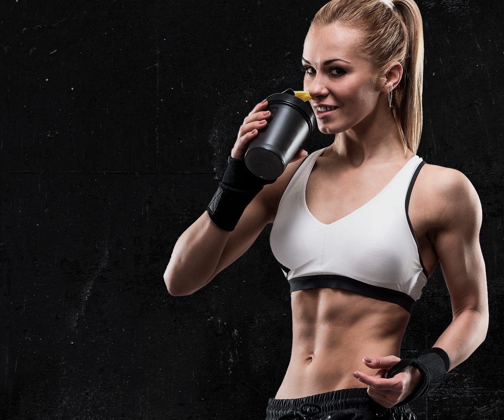
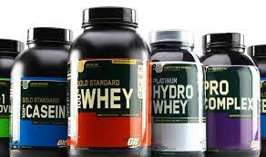
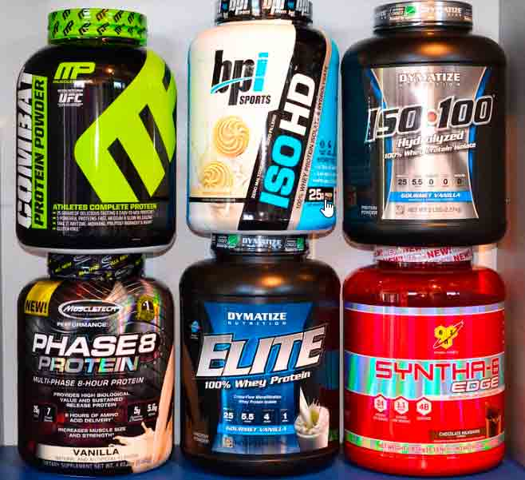

Hola, estas listo para dar lo mejor de ti y tener buenos resultados.
| Contactanos al 55 23 89 57 23 o al correo -GYMfatima25gmail.com- |
Razones para ir al gimnasio. Mejora la coordinación: Una buena coordinación te servirá en tu vida diaria para ser menos torpe, estar más activo, incluso moverte mejor y posicionar mejor tu cuerpo
| Beneficios del ejecicio | Es bueno tomar proteina |
Los puntos clave que son referencia mundial del ejercicio es ganar fuerza y resistencia, sin importar la cantidad de peso con la que se trabaje, sin duda que esta rutina diaria, favorece notablemente la condición física, ya que se adopta una postura de poder ganar más corporal y mayor soporte, por lo que el cansancio tarda en aparecer.
-TE AYUDA A QUEMAR MUCHAS CALORÍAS- -TE AYUDA A COMBATIR ENFERMEDADES- -CONCILIAS EL SUEÑO Y DUERMES MEJOR-
Te dejamos algunos consejos para comenzar a estar en movimiento: Elegí la actividad física que más te guste y esté dentro de tus posibilidades. Buscá el mejor momento del día para realizarla. Hacé ejercicio en familia o con amigos, es una buena forma de mantener la constancia. Empezá de a poco. Podés comenzar con 30 minutos diarios de ejercicio e ir incrementando progresivamente la duración o la intensidad a medida que mejora tu condición física. Mantenete activo durante el día, subí por escaleras fijas, elegí ir al trabajo caminando o en bici, sacá a pasear a tu perro, etc. Sé constante y fijá una meta como estímulo para continuar. Realizá ejercicio, al menos tres veces por semana.
- Proteína Whey O Suero De Leche- Proteínas De Caseína- Proteína De Liberación Secuencial- Proteinas multifuncionales-Proteínas De Huevo- Proteínas De Carne-
¿Qué pasa si tomo proteína después de entrenar? El consumo de proteína de la dieta después del ejercicio estimula la síntesis de proteína muscular post-ejercicio, estimulando el aumento neto de proteínas musculares, y facilitando la respuesta adaptativa del músculo esquelético al entrenamiento con ejercicio prolongado.
 